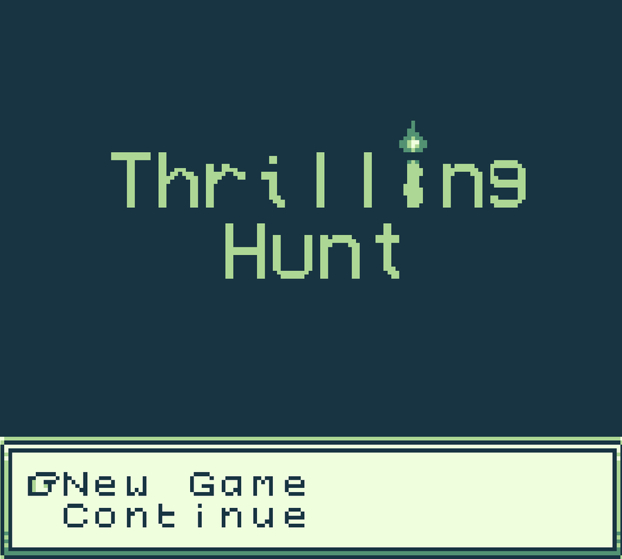
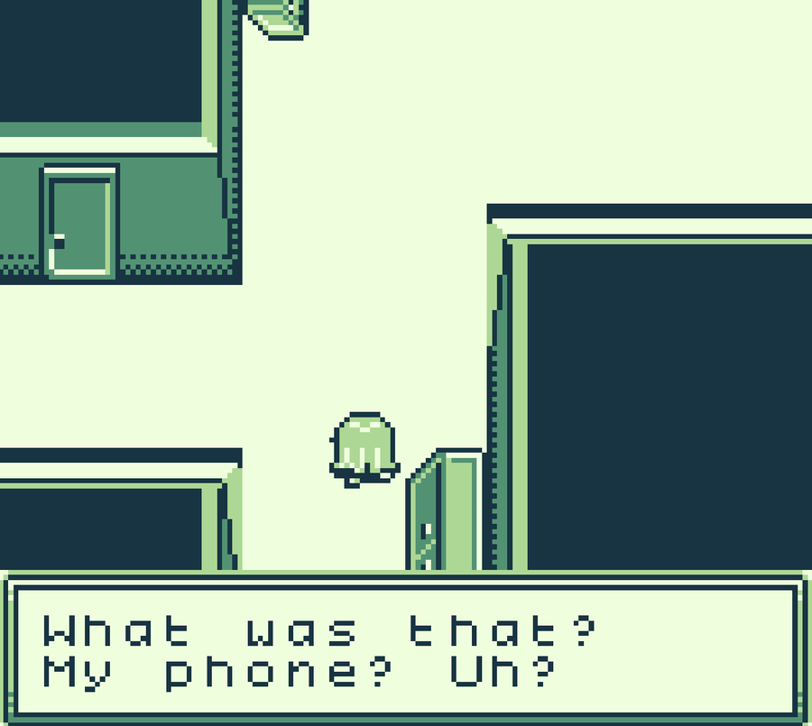
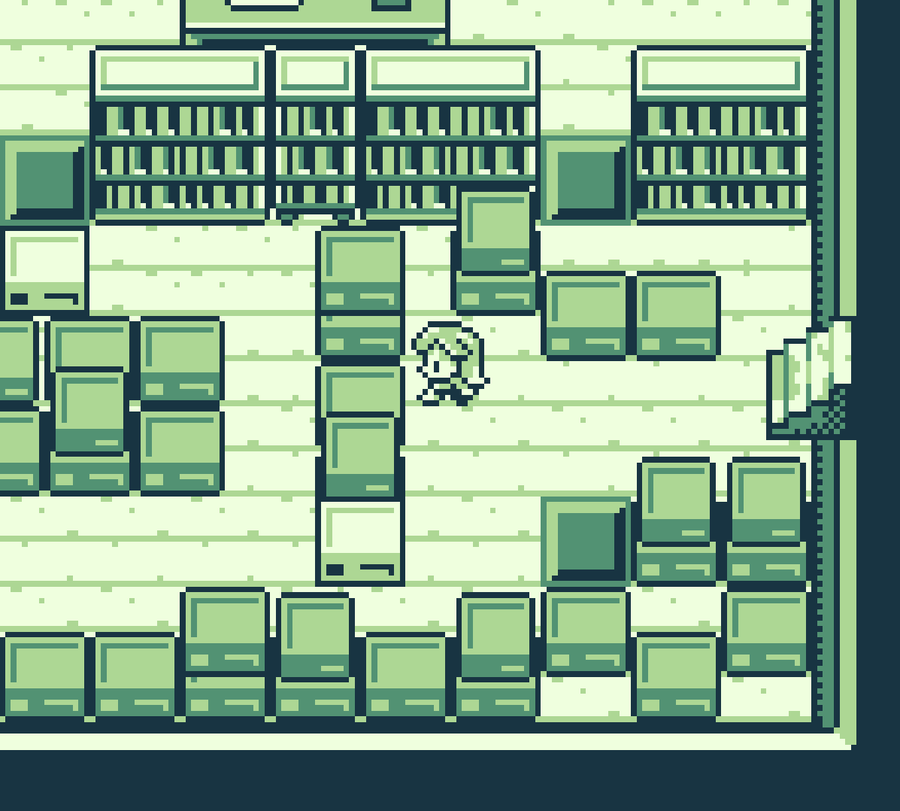

Adventure · GB Studio · Academic Project
A prototype built in GB Studio for an academic project: play as a ghost hunter who enters a house where a ghost resides, and complete the ritual needed to banish it.



Built in GB Studio, which targets the original Game Boy's hardware constraints: a 4-color palette, tile-based scenes, and the boot-up "New Game / Continue" menu faithfully recreated down to the font. The player explores a haunted house room by room, reads dialogue and picks up on environmental cues, and works toward completing a ritual that drives the ghost out.